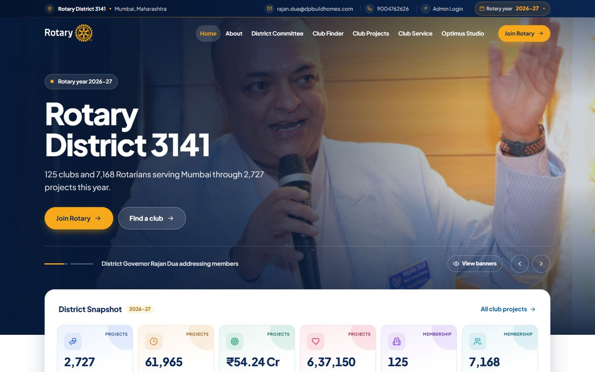
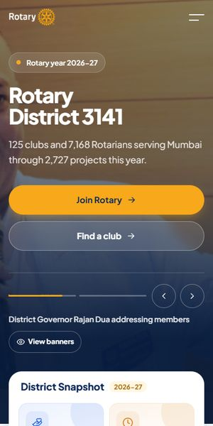
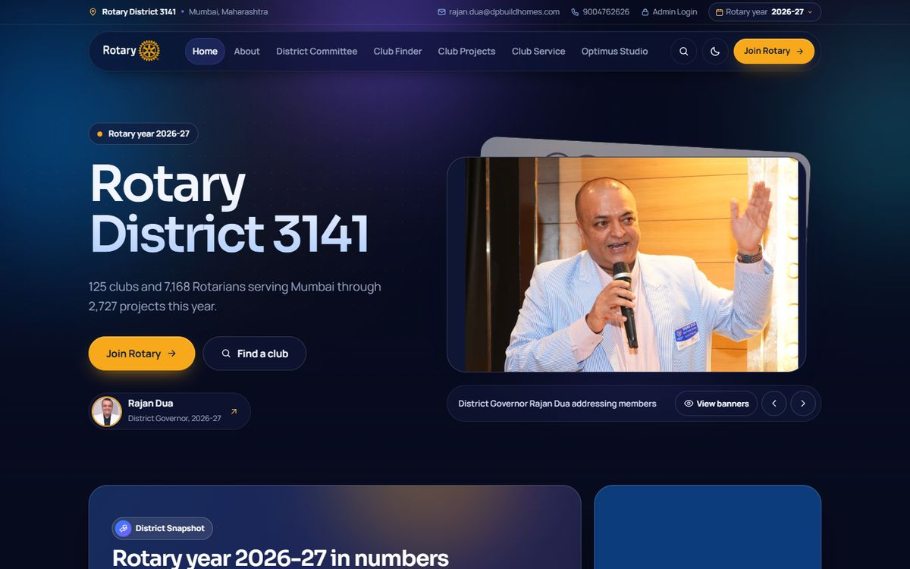
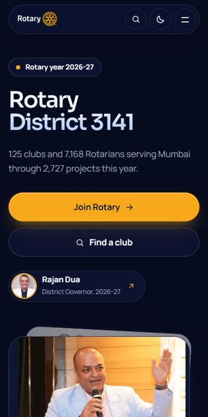
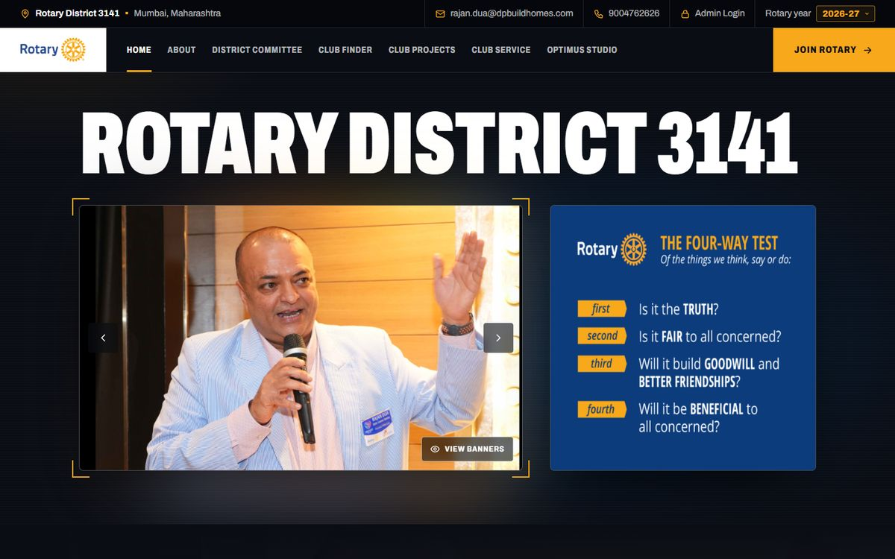
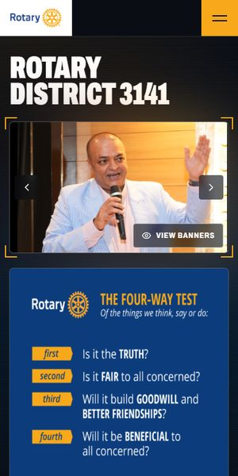
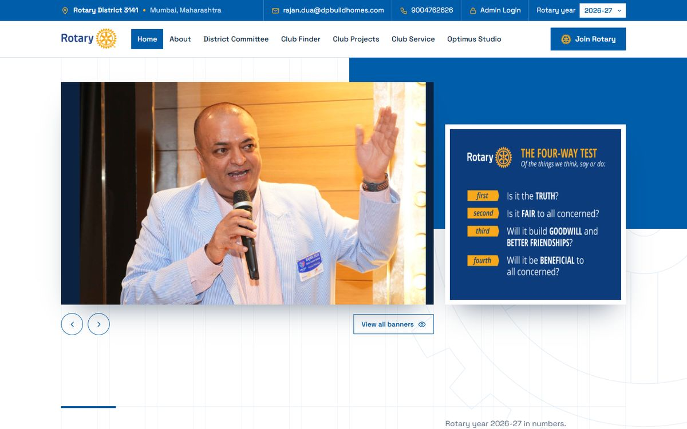
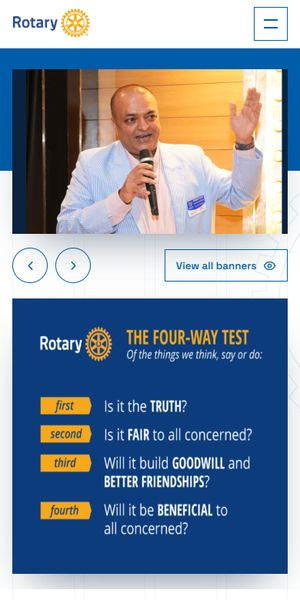

Heritage
Editorial and institutional. A full-width banner, the advertisement as a popup on arrival, snapshot cards resting on the banner, a navy band for the dignitaries and the month calendar beside the day’s list.


Editorial and institutional. A full-width banner, the advertisement as a popup on arrival, snapshot cards resting on the banner, a navy band for the dignitaries and the month calendar beside the day’s list.


Modern glass on deep blue. A floating menu with a club search (Ctrl K), a stacked deck of banners, the advertisement beside the numbers and club events that scroll on their own.


Cinematic and bold. A giant title over a framed banner with the advertisement beside it, rolling numbers over photos, a photo calendar wall and an events timeline that fills as you scroll.


Swiss and geometric. A strict 12-column grid, flat blue blocks, a checkerboard of numbers, club events that flip in week by week, and a Rotary wheel that turns as you scroll.